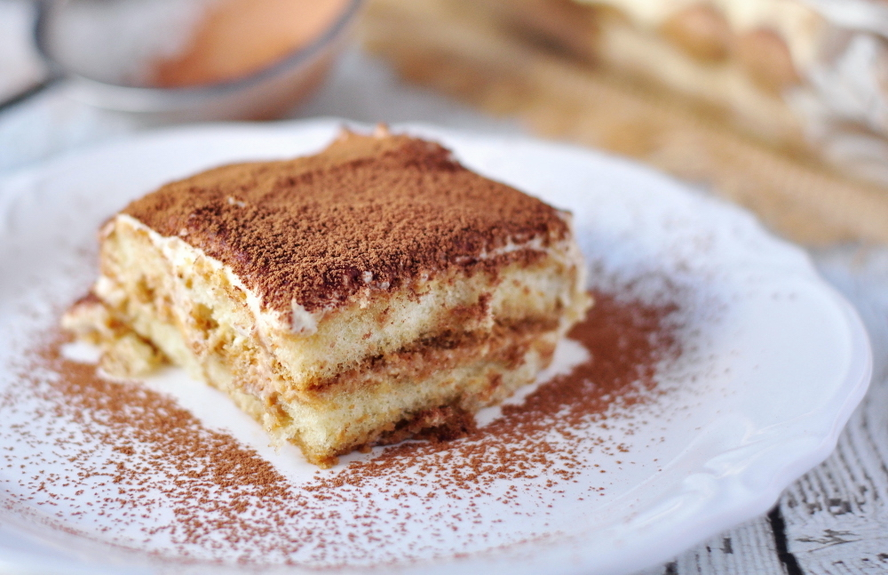

The image shows a slice of tiramisu served on a white plate, generously dusted with cocoa powder. The dessert has clearly defined layers: light, coffee-soaked ladyfingers alternating with a smooth, pale cream. The texture looks soft and airy, while the cocoa on top adds contrast and a slightly bitter finish. The slice appears fresh and delicate, with a creamy consistency that holds its shape.
Tiramisu is a classic Italian dessert built around the contrast between rich creaminess and the bold flavor of coffee. Its structure comes from layers of ladyfinger biscuits softened with espresso, which provide a light but flavorful base. The cream, made from mascarpone, eggs, and sugar, is smooth and velvety, balancing sweetness with a subtle richness.
These elements come together to create a dessert that is indulgent yet refined. The cocoa powder on top adds a slightly bitter note that enhances the coffee flavor and cuts through the creaminess. The final result is a dessert that is soft, aromatic, and well-balanced, with a harmonious blend of textures and flavors that make tiramisu timeless.